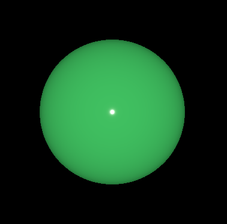
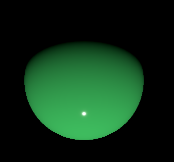

DirectionalLight QML Type
Defines a directional light in the scene. More...
| Import Statement: | import QtQuick3D |
| Inherits: |
Detailed Description
The directional light emits light in one direction from an unidentifiable source located infinitely far away. This is similar to the way sunlight works in real life. A directional light has infinite range and does not diminish.
If castsShadow is enabled, shadows will be parallel to the light direction.
A directional light effectively have no position, so moving it does not have any effect. The light will always be emitted in the direction of the light's Z axis.
Rotating the light along its X or Y axis will change the direction of the light emission.
Scaling a directional light will only have an effect in the following cases:
- If Z scale is set to a negative number, the light will be emitted in the opposite direction.
- If the scale of any axis is set to 0, the light will be emitted along the world's Z axis.
Note: Rotating the light will then have no effect.
Let's look at a simple example:
import QtQuick import QtQuick3D View3D { anchors.fill: parent PerspectiveCamera { z: 600 } DirectionalLight { } Model { source: "#Sphere" scale: Qt.vector3d(4, 4, 4) materials: PrincipledMaterial { baseColor: "#40c060" roughness: 0.1 // make specular highlight visible } } }
Here the DirectionalLight uses the default white color, emitting in the direction of the DirectionalLight node's Z axis.

Rotating 60 degrees around the X axis would lead to the following. Instead of emitting straight in the direction of the Z axis, the light is now pointing 60 degrees "down":
DirectionalLight { eulerRotation.x: 60 }

For further usage examples, see Qt Quick 3D - Lights Example.
See also PointLight and SpotLight.